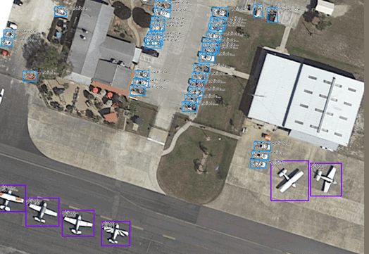
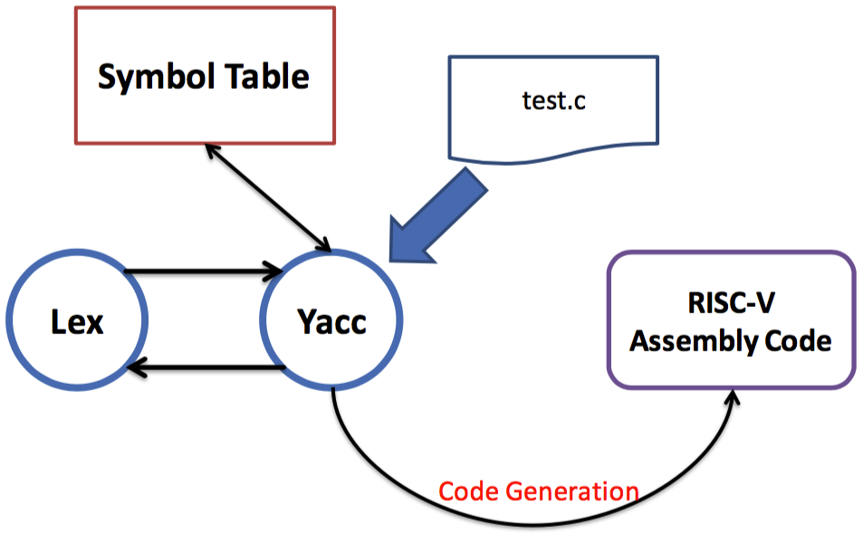
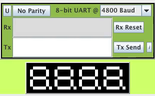
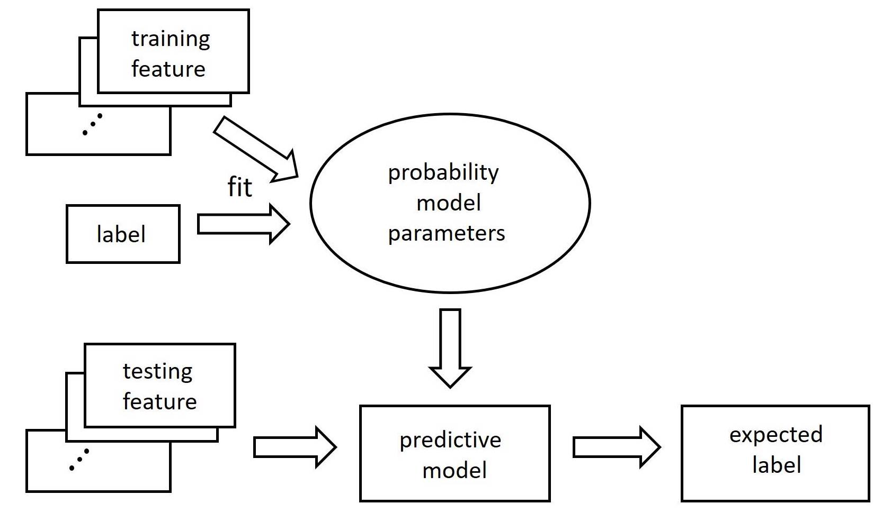

Kuan-Hung Chen 陳冠弘
Master Student
Department of Electrical Engineering
National Tsing Hua University
Email: khc at gapp.nthu.edu.tw
I'm a first-year master student in the Department of Electrical Engineering at National Tsing Hua University (NTHU), advised by Prof. Min Sun. I also received my B.S. at this place.
I'm interested in deep learning and computer vision. Recently, my research is focused on object detection and human pose estimation. Also, I'm participating in CarePLUS.ai, an AI-assisted home care system project just presented at CES 2020 (press), as a student researcher.
| Sept. 2020 - Present |
M.S. in Electrical Engineering National Tsing Hua University Advisor: Prof. Min Sun |
| Sept. 2017 - Jun. 2020 |
B.S. in Electrical Engineering National Tsing Hua University GPA: 3.9/4.3 |
| Sept. 2016 - Jun. 2017 |
Department of Computer Science National Central University Transferred to NTHU at Sept. 2017 |
Experience
| Sept. 2020 - Present |
CarePLUS.ai, Student Researcher For more information, visit our website / fan page |
| Summer 2020 |
VSLab @ NTHU, Research Assistant Advisor: Prof. Min Sun |
| Aug. 2019 - Feb. 2020 |
Edony A.I. (startup), Software Engineering Intern Advisor: Tamio Chou |
| Jul. 2018 - Jun. 2019 |
VSLab @ NTHU, Undergraduate Researcher Advisor: Prof. Min Sun |
Personal Projects

Awesome Tiny Object Detection
A curated list of awesome papers, datasets, surveys and articles for tiny object/face/pedestrian detection. Starred by 250+ and forked by 50+ GitHub users worldwide.

Anchor-Based Tiny Object Detection in Aerial Images
Bachelor thesis
A project about object detection based on RetinaNet in aerial images.

Course Projects
Remove the People: Segmentation-Based Object Removel
EE366000: Digital Signal Processing
Code (To be released) /
Report
A two-stage object removing algorithm which first generates segmentation mask by filter-based method, then remove objects in images by seam carving technique.

Simple Compiler Design and Implementation
CS340400: Compiler Design
A simple compiler implementation which targets on subset of C language and generates RISC-V assembly code. Includes lexical analyzer, syntax analyzer and code generator.


Predict Flue-Gas Desulfurization using Random Forest classssifier
EE655000: Machine Learning
Ranked 1st out of 9 teams
A classification mechanism for predicting Flue-Gas Desulfurization level based on scikit-learn's RandomForestClassifier.
|
|